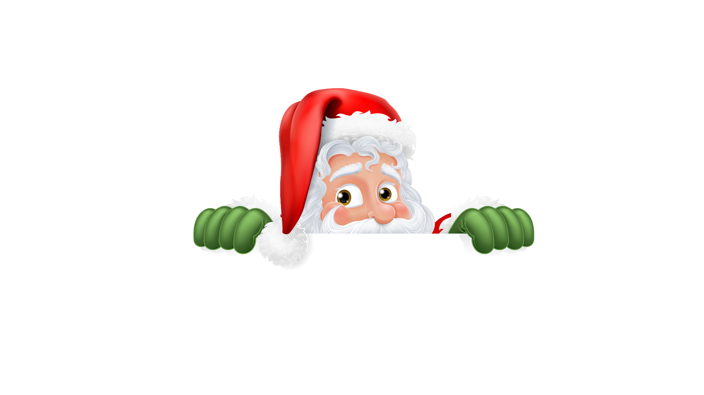

<html>
  <meta name="viewport" content="width=device-width, initial-scale=1.0" />
  <main>
    <section id="corpopagina">
      
      <textarea name="carta" id="carta">
        O Natal é tempo de celebrar a vida, o amor e a esperança. Que neste Natal, a magia e a alegria invadam seu coração. Desejo a você muita paz, saúde e prosperidade.
      </textarea>
      
    </section>

    <style>
      body {
        background-color: rgb(95, 214, 95);
        margin: 0; /* Remove margens padrão */
        position: relative; /* Necessário para o posicionamento absoluto dos filhos */
      }

      #papainoelimg {
        width: 80%; /* Ajuste a largura conforme necessário */
        height: auto;
        position: absolute; /* Permite que a imagem seja posicionada em relação ao pai */
        top: 170px; /* Ajusta a posição vertical da imagem */
        left: 50%; /* Centraliza horizontalmente */
        transform: translate(-50%, -50%); /* Ajusta a centralização */
        z-index: 2; /* Garante que a imagem fique acima da caixa de texto */
      }

      #carta {
        width: 90%; /* Aumenta a largura para dispositivos menores */
        max-width: 600px; /* Limita a largura máxima */
        height: 200px;
        background-color: rgb(255, 255, 255);
        padding: 4%;
        overflow-y: hidden;
        position: absolute; /* Permite que a área de texto seja posicionada em relação ao pai */
        top: 280px; /* Ajuste a posição vertical da caixa de texto para que desça um pouco */
        left: 50%; /* Centraliza horizontalmente */
        transform: translate(-50%, -50%); /* Ajusta a centralização */
        font-family: cursive;
        font-size: large;

        z-index: 1; /* Garante que o texto fique abaixo da imagem */
        border-radius: 10px; /* Opcional: arredonda os cantos da caixa de texto */
        box-shadow: 0 4px 8px rgba(0, 0, 0, 0.2); /* Opcional: adiciona sombra à caixa de texto */
      }

      #corpopagina {
        display: flex;
        justify-content: center;
        align-items: center;
        flex-direction: column;
        position: relative; /* Necessário para o posicionamento absoluto dos filhos */
      }
      #natalfoto {
        width: 100%;
        height: auto;
        position: absolute;
        top: 600px;
      }
    </style>
  </main>
</html>
